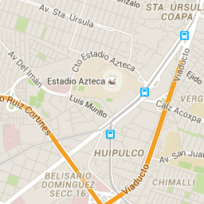

Desarrolla habilidades administrativas, contables, de investigación y comercialización que aseguren el buen manejo y desarrollo de la empresa, así como la creación, gestión y administración de nuevos conceptos en empresas.
De la misma manera, debe ser capaz de promover y difundir la gastronomía de México a nivel nacional e internacional.
REQUISITOS?
Requisitos de Ingreso a Licenciaturas SEJ y SEP (cuatrimestrales)
Solicitud de inscripción de SIAAF (F-UI-01)
Solicitud de aspirante a grado superior F-CE-88 solo en caso de ser aspirantes a grado superior
Acta de nacimiento original reciente (vigencia de un año) y una copia
Certificado de bachillerato original con tres copias
4 fotografías tamaño infantil blanco y negro de estudio o instantáneas
Copia de CURP
Copia de credencial de elector
Para grado superior deberá de cumplir con los referidos en el P-CE-21 Procedimiento de Inscripción de Aspirantes a Grado Superior.
UBICACION

3 sur No. 5759 , Colonia El Cerrito, C.P. 72440 Puebla, Pue., México


 1
1 2
2 3
3 4
4.jpg)